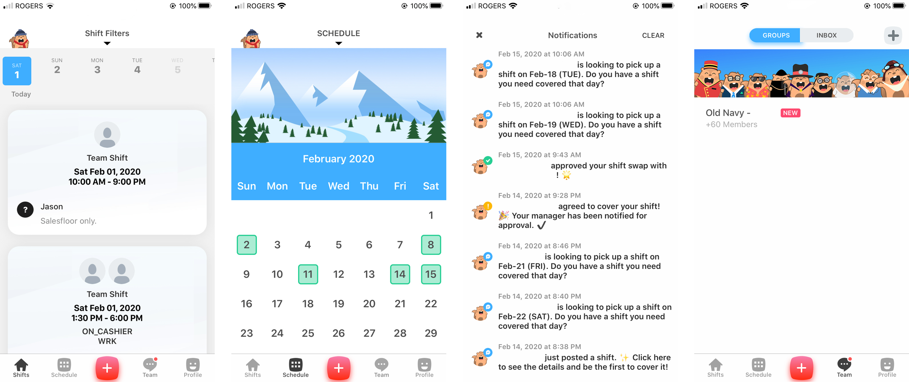
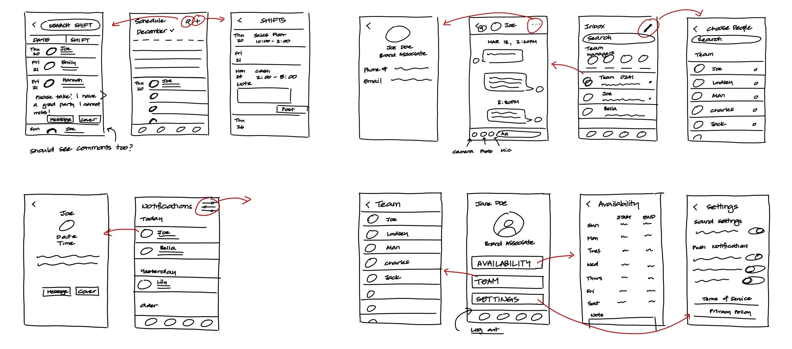

Redesign for the Shyft App
Product Design, Concept
UX Research, Visual Design, Interaction Design
Adobe XD, Sketch
Shyft is a platform used primarily for managing shifts, communicating with team members and viewing scheduled shifts. While available through a web-app portal, Shyft is primarily used on mobile, allowing employees to easily check and maintain their shifts.
As a Brand Associate at a retail shop, I find myself constantly checking Shyft when I need to get a shift covered or pick up more shifts. While using this app, however, I've found there to be a lot of inconsistencies and dysfunctions, which is where the idea for this project came from!
I conducted 25 surveys, from Brand Associates to Managers, to gain a deeper understanding of the main problems that people were having with the Shyft App - which allowed me to develop Shyft's main pain points and areas of interest.
In my survey, I also included a box where students could fill in their feedback on the Shyft mobile app. These insights helped make the decisions on what areas to focus on.
From my research, I narrowed down the 3 main problems that people seemed to have with the Shyft App:
1. It’s hard to keep track of shifts: Because weekly schedules are usually emailed and not updated on the Shyft app until later, employees often have to refer to old emails in order to view their schedule.
2. Access to see co-workers availability: There is currently no option which allows you to see the schedule of other employees, which makes it difficult and tedious when you need to find someone to cover your shift, or would like to trade shifts with someone.
3. App interface is outdated: Feedback from users kept pointing out that the current app interface for Shyft not only felt outdated, but that it wasn’t designed visually to best assist users.
After analyzing the data from my user surveys and research, I narrowed down which features may be most useful and sketched out different iterations of wireframes.
With Shyft originally having 5 tabs, I decided to collapse these tabs down to four and maximize as many user functions as I could.
After completing and sketching out several different sketches, I took my ideas onto Sketch, where I was able to design several midfi wireframes.
The stylistic choices are focused on reducing the amount of initial options so that it focuses primarily on the schedule. However, this structure ended up changing quite a bit as I converted my wireframes into higher fidelity.

Once I had completed my designs, I created a UI Library which helped me decide which colour scheme and fonts I wanted to use, before applying it to my midfi wireframes.
Collapsing five tabs into four, I was able to maximize the use of each tab efficiently with the introduction of several new key features:
1. Easy Schedule Access: Employees can now refer to the schedule and see when they are shifted, as well as, given access to view the rest of the team as scheduled.
2. Easier to Post Shifts: One of the annoyances of the original Shyft app was that you had to adjust and type in each shift manually before giving it away, which often meant switching back and forth between the emailed schedule and Shyft app. I created a feature which allow employees to be able to select from their current shifts, rather than having to manually type everything in themselves.
3. Changing availability: In order to change availability, employees have to go in the store and manually change it on the office desktop, which is often slow and laggy. Not only that, but employees have to wait until the next time they are shifted in order to change their availability. This new option allows for employees to submit a new availability without hassle!